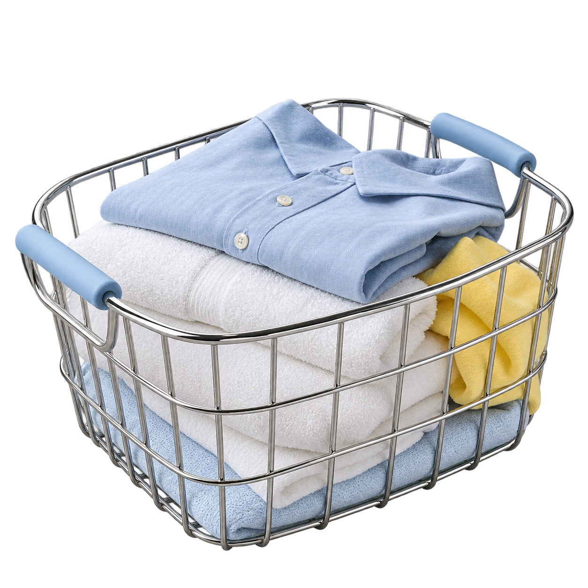

Style tile / edisi 02
Klik teks contoh untuk mengedit sementara. Perubahan contoh tidak disimpan otomatis.
Teratur dalam kerja.
Hangat dalam layanan.
Identitas jurnal Top Hills dipertahankan dengan tipografi editorial, biru yang lebih tegas, dan satu objek laundry yang konsisten. Warna serta komponen menggunakan token situs yang sama.
Midnight blue#152C51 · Navigasi
Service blue#2856C5 · Aksi utama
Powder blue#BED8FB · Sorotan
Journal cream#FCF7ED · Cerita
Workspace paper#F7F8FC · Ruang kerja
every day.
Catatan yang mudah dibaca membantu tim bekerja dengan jelas. Data dan formulir memakai huruf sans; judul memakai Georgia yang tersedia secara lokal.
Satu cucian,
satu perhatian.
Cuci & setrika
Label tercatat · QC diperiksa · Siap diserahkan
Contoh komponen interaktif.

Objek yang sama,
cerita yang utuh.
Krom, kain putih, aksen biru. Aset keranjang original dari versi sebelumnya dipertahankan. Geraknya adalah transformasi gambar mengikuti gulir; belum memakai footage Higgsfield.
Ritme yang memberi ruang.
Tiga bab; jeda membaca dipisahkan dari perpindahan. Gulir maju atau mundur. Lewati cerita kapan saja; pengaturan minim gerak menampilkan isi secara berurutan.